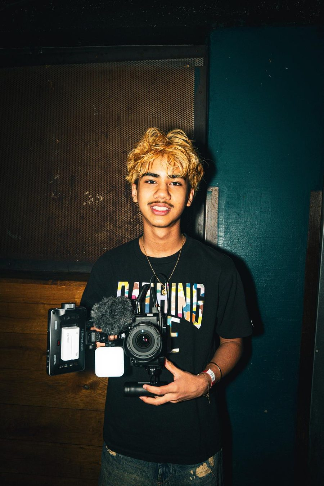
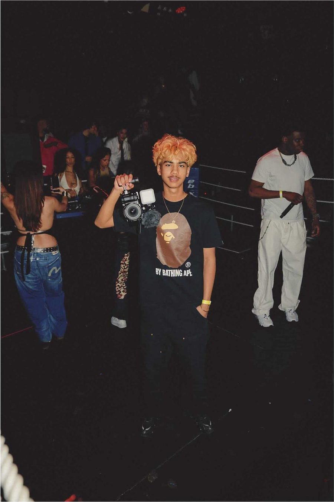

Videographer & filmmaker from Rotterdam. Concert films, music videos and social content.
View portfolioGet in touchInstagram

About me
Hello, my name is Timothy, known as “Augke”. I’m a videographer and filmmaker in Rotterdam, and I study Audiovisual Design at the Willem de Kooning Academy.
I focus on concert films, music videos and social media content. I work with artists, event organisers and creative teams to capture their energy and vision on film.
I’ve worked with a wide range of artists on live shows, music videos and events, in the Netherlands and abroad. From filming and directing to editing and colour grading, I enjoy being involved in every stage of the creative process.
Open to new projects and collaborations, in any format and at any location.
- Based inRotterdam, The Netherlands
- AvailableWorldwide
- StudyAudiovisual Design, WdKA
- WorkFilming, directing, editing, colour grading
Experience & education
- Willem de Kooning AcademyAudiovisual Design, currently studyingRotterdam
- Tandartspraktijk ZonnelachMarketing ManagerRotterdam
- Kamera ExpressLogisticsCapelle aan den IJssel
- Theater ZuidpleinCamera workRotterdam
- Isala TheaterCamera workCapelle aan den IJssel